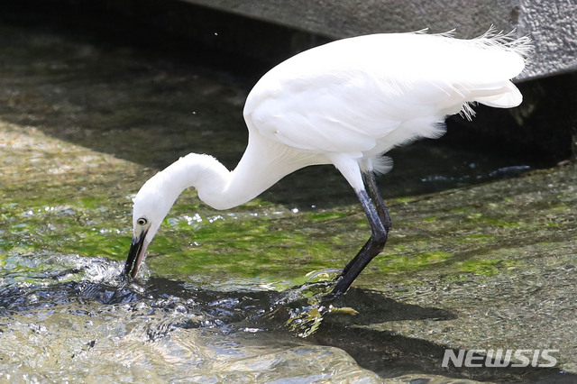

백로는 왜가리과에 속하는 새 중에서 몸의 깃털이 흰색인 새로 우리나라 논이나 저수지에서 흔하게 목격된다. 겉모습이 깨끗한 흰색이라서 조선시대에는 청렴한 선비를 상징하는 새로 여겨져 화조도에 자주 등장한다. 낮에 먹이활동은 단독으로 하지만 밤이되면 여러마리가 한 나무에 같이 둥지를 만든다.
\ 생김새가 비슷한 쇠백로, 대백로, 중백로, 왜가리 등이 있으나 부리의 색깔과 크기에 따라 다른 종으로 구분된다. 물고기, 개구리, 곤충 등을 잡아먹고 쥐나 뱀도 잡아먹는다.